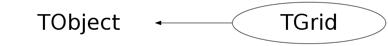

class TGrid: public TObject
TGrid Abstract base class defining interface to common GRID services. To open a connection to a GRID use the static method Connect(). The argument of Connect() is of the form: <grid>[://<host>][:<port>], e.g. alien, alien://alice.cern.ch, globus://glsvr1.cern.ch, ... Depending on the <grid> specified an appropriate plugin library will be loaded which will provide the real interface. Related classes are TGridResult.
Function Members (Methods)
public:
| TGrid() | |
| TGrid(const TGrid&) | |
| virtual | ~TGrid() |
| void | TObject::AbstractMethod(const char* method) const |
| virtual void | TObject::AppendPad(Option_t* option = "") |
| virtual void | TObject::Browse(TBrowser* b) |
| virtual Bool_t | Cd(const char* = "", Bool_t = kFALSE) |
| static TClass* | Class() |
| virtual const char* | TObject::ClassName() const |
| virtual void | TObject::Clear(Option_t* = "") |
| virtual TObject* | TObject::Clone(const char* newname = "") const |
| virtual TGridResult* | Command(const char*, Bool_t = kFALSE, UInt_t = 2) |
| virtual Int_t | TObject::Compare(const TObject* obj) const |
| static TGrid* | Connect(const char* grid, const char* uid = 0, const char* pw = 0, const char* options = 0) |
| virtual void | TObject::Copy(TObject& object) const |
| virtual void | TObject::Delete(Option_t* option = "")MENU |
| virtual Int_t | TObject::DistancetoPrimitive(Int_t px, Int_t py) |
| virtual void | TObject::Draw(Option_t* option = "") |
| virtual void | TObject::DrawClass() constMENU |
| virtual TObject* | TObject::DrawClone(Option_t* option = "") constMENU |
| virtual void | TObject::Dump() constMENU |
| virtual void | TObject::Error(const char* method, const char* msgfmt) const |
| virtual void | TObject::Execute(const char* method, const char* params, Int_t* error = 0) |
| virtual void | TObject::Execute(TMethod* method, TObjArray* params, Int_t* error = 0) |
| virtual void | TObject::ExecuteEvent(Int_t event, Int_t px, Int_t py) |
| virtual void | TObject::Fatal(const char* method, const char* msgfmt) const |
| virtual TObject* | TObject::FindObject(const char* name) const |
| virtual TObject* | TObject::FindObject(const TObject* obj) const |
| virtual Option_t* | TObject::GetDrawOption() const |
| static Long_t | TObject::GetDtorOnly() |
| const char* | GetGrid() const |
| virtual const char* | GetHomeDirectory() |
| const char* | GetHost() const |
| virtual const char* | TObject::GetIconName() const |
| virtual TGridJDL* | GetJDLGenerator() |
| virtual const char* | TObject::GetName() const |
| virtual char* | TObject::GetObjectInfo(Int_t px, Int_t py) const |
| static Bool_t | TObject::GetObjectStat() |
| virtual Option_t* | TObject::GetOption() const |
| const char* | GetOptions() const |
| Int_t | GetPort() const |
| const char* | GetPw() const |
| virtual const char* | TObject::GetTitle() const |
| virtual UInt_t | TObject::GetUniqueID() const |
| const char* | GetUser() const |
| const char* | GridUrl() const |
| virtual Bool_t | TObject::HandleTimer(TTimer* timer) |
| virtual ULong_t | TObject::Hash() const |
| virtual void | TObject::Info(const char* method, const char* msgfmt) const |
| virtual Bool_t | TObject::InheritsFrom(const char* classname) const |
| virtual Bool_t | TObject::InheritsFrom(const TClass* cl) const |
| virtual void | TObject::Inspect() constMENU |
| void | TObject::InvertBit(UInt_t f) |
| virtual TClass* | IsA() const |
| virtual Bool_t | IsConnected() const |
| virtual Bool_t | TObject::IsEqual(const TObject* obj) const |
| virtual Bool_t | TObject::IsFolder() const |
| Bool_t | TObject::IsOnHeap() const |
| virtual Bool_t | TObject::IsSortable() const |
| Bool_t | TObject::IsZombie() const |
| virtual Bool_t | Kill(TGridJob* gridjob) |
| virtual Bool_t | KillById(TString) |
| virtual TGridResult* | LocateSites() |
| virtual void | TObject::ls(Option_t* option = "") const |
| virtual TGridResult* | Ls(const char* = "", Option_t* = "", Bool_t = kFALSE) |
| void | TObject::MayNotUse(const char* method) const |
| virtual Int_t | Mkdir(const char* = "", Option_t* = "", Bool_t = kFALSE) |
| virtual Bool_t | TObject::Notify() |
| void | TObject::Obsolete(const char* method, const char* asOfVers, const char* removedFromVers) const |
| virtual TGridCollection* | OpenCollection(const char*, UInt_t = 1000000) |
| virtual TGridCollection* | OpenCollectionQuery(TGridResult*, Bool_t = kFALSE) |
| static void | TObject::operator delete(void* ptr) |
| static void | TObject::operator delete(void* ptr, void* vp) |
| static void | TObject::operator delete[](void* ptr) |
| static void | TObject::operator delete[](void* ptr, void* vp) |
| void* | TObject::operator new(size_t sz) |
| void* | TObject::operator new(size_t sz, void* vp) |
| void* | TObject::operator new[](size_t sz) |
| void* | TObject::operator new[](size_t sz, void* vp) |
| TGrid& | operator=(const TGrid&) |
| virtual void | TObject::Paint(Option_t* option = "") |
| virtual void | TObject::Pop() |
| virtual void | TObject::Print(Option_t* option = "") const |
| virtual TGridJobStatusList* | Ps(const char*, Bool_t = kTRUE) |
| virtual const char* | Pwd(Bool_t = kFALSE) |
| virtual TGridResult* | Query(const char*, const char*, const char* = "", const char* = "") |
| virtual Int_t | TObject::Read(const char* name) |
| virtual void | TObject::RecursiveRemove(TObject* obj) |
| virtual Bool_t | Register(const char*, const char*, Long_t = -1, const char* = 0, const char* = 0, Bool_t = kFALSE) |
| void | TObject::ResetBit(UInt_t f) |
| virtual Bool_t | Resubmit(TGridJob* gridjob) |
| virtual Bool_t | ResubmitById(TString) |
| virtual Bool_t | Rm(const char*, Option_t* = "", Bool_t = kFALSE) |
| virtual Bool_t | Rmdir(const char* = "", Option_t* = "", Bool_t = kFALSE) |
| virtual void | TObject::SaveAs(const char* filename = "", Option_t* option = "") constMENU |
| virtual void | TObject::SavePrimitive(ostream& out, Option_t* option = "") |
| void | TObject::SetBit(UInt_t f) |
| void | TObject::SetBit(UInt_t f, Bool_t set) |
| virtual void | TObject::SetDrawOption(Option_t* option = "")MENU |
| static void | TObject::SetDtorOnly(void* obj) |
| static void | TObject::SetObjectStat(Bool_t stat) |
| virtual void | TObject::SetUniqueID(UInt_t uid) |
| virtual void | Shell() |
| virtual void | ShowMembers(TMemberInspector& insp) |
| virtual void | Stderr() |
| virtual void | Stdout() |
| virtual void | Streamer(TBuffer& b) |
| void | StreamerNVirtual(TBuffer& b) |
| virtual TGridJob* | Submit(const char*) |
| virtual void | TObject::SysError(const char* method, const char* msgfmt) const |
| Bool_t | TObject::TestBit(UInt_t f) const |
| Int_t | TObject::TestBits(UInt_t f) const |
| virtual void | TObject::UseCurrentStyle() |
| virtual void | TObject::Warning(const char* method, const char* msgfmt) const |
| virtual Int_t | TObject::Write(const char* name = 0, Int_t option = 0, Int_t bufsize = 0) |
| virtual Int_t | TObject::Write(const char* name = 0, Int_t option = 0, Int_t bufsize = 0) const |
protected:
| virtual void | TObject::DoError(int level, const char* location, const char* fmt, va_list va) const |
| void | TObject::MakeZombie() |
Data Members
public:
| enum TObject::EStatusBits { | kCanDelete | |
| kMustCleanup | ||
| kObjInCanvas | ||
| kIsReferenced | ||
| kHasUUID | ||
| kCannotPick | ||
| kNoContextMenu | ||
| kInvalidObject | ||
| }; | ||
| enum TObject::[unnamed] { | kIsOnHeap | |
| kNotDeleted | ||
| kZombie | ||
| kBitMask | ||
| kSingleKey | ||
| kOverwrite | ||
| kWriteDelete | ||
| }; |
Class Charts
{kind=link}
{kind=link}
{kind=link}
{kind=link}

Function documentation
TGrid * Connect(const char* grid, const char* uid = 0, const char* pw = 0, const char* options = 0)
The grid should be of the form: <grid>://<host>[:<port>],
e.g.: alien://alice.cern.ch, globus://glsrv1.cern.ch, ...
The uid is the username and pw the password that should be used for
the connection. Depending on the <grid> the shared library (plugin)
for the selected system will be loaded. When the connection could not
be opened 0 is returned. For AliEn the supported options are:
-domain=<domain name>
-debug=<debug level from 1 to 10>
Example: "-domain=cern.ch -debug=5"
TGridResult * Command(const char* , Bool_t = kFALSE, UInt_t = 2)
{ MayNotUse("Command"); return 0; }TGridResult * Query(const char* , const char* , const char* = "", const char* = "")
{ MayNotUse("Query"); return 0; }TGridResult * Ls(const char* = "", Option_t* = "", Bool_t = kFALSE)
--- Catalogue Interface
{ MayNotUse("Ls"); return 0; }Bool_t Register(const char* , const char* , Long_t = -1, const char* = 0, const char* = 0, Bool_t = kFALSE)
TGridCollection * OpenCollection(const char* , UInt_t = 1000000)
{ MayNotUse("OpenCollection"); return 0; }TGridCollection * OpenCollectionQuery(TGridResult* , Bool_t = kFALSE)
{ MayNotUse("OpenCollection"); return 0; }